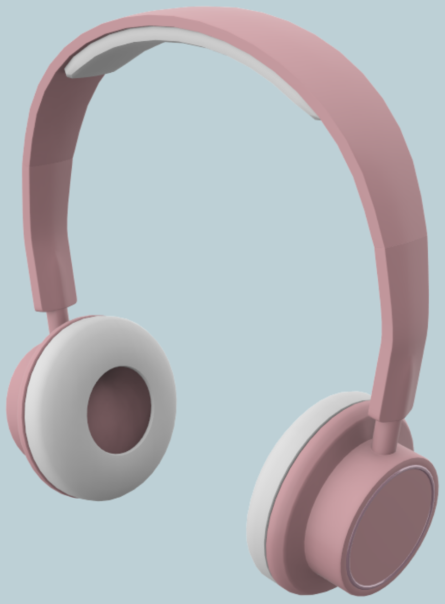

FOCUS: A 3D Sound Shooting GameA co-designed virtual-space shooting game for the blind and visually impaired. |
 |
Overview
This project was part of a Human-Computer Interaction course I took during my undergraduate degree in Computer Science. It involves the design of an audio game mobile application, called Focus, following a participatory design process with visually impaired participants. The research methodology consisted of a comprehensive study of relevant literature, identifying user requirements, prototyping, and evaluation. The overall response to our game application was positive.
My Role
I was the team lead of a group of 5 undergraduate students in this project. I was heavily involved in every phase of the process, including discovery, research, requirements, design, and testing.
The Problem
Accessible games have been researched and developed for many years, yet blind people still have minimal access to them. This is a serious limitation for the blind community since electronic games have become one of the most widespread means of entertainment.
Generally, elaborate games developed for visually impaired people require external assistive technologies, such as 3-dimensional headphones, to obtain the full gaming experience. This becomes impractical for visually impaired gamers in developing
countries such as Pakistan, where these technologies are expensive and there is a general lack of awareness about them.
Therefore, we undertook a project to design an audio game mobile application called Focus, with the aim of keeping the game design practical as well as enjoyable for visually impaired gamers in Pakistan. Audio games are a special
kind of electronic game relying on audible and tactile feedback rather than graphics to convey information. These games can provide accessible gaming experiences to visually impaired people who are generally handicapped by conventional games.
The Design Process
Previous academic research suggests that a participatory design-based approach is critical for users with disabilities as designers can easily overlook important technological aids without user involvement. Therefore, we followed a participatory design-based
approach to develop Focus.
However, participatory design with visually impaired participants is challenging because typical methods used to engage them in the design process are based on visual techniques. To overcome this challenge, we used methods proposed
in previous literature for designing with blind users alongside suggestions from our participants to inform our entire design process.
User Research and Design Workshops
To gather user requirements, we conducted semi-structured interviews with 35 visually impaired participants who were familiar with audio games. We also observed 10 of them use their mobile phones to play an audio game of their choice. The ages of our
participants ranged from 14 to 25. Our participants were from all three Paralympic classifications of blindness: B1, in which people are completely or almost completely blind; B3, where people have partial vision, and B2, in which vision
falls between B1 and B3. Before conducting the interviews, we required participants to sign an orally delivered consent form with their thumb impressions.
We also studied the relevant literature to extract guidelines on what constitutes an engaging audio game. We summarize six major guidelines from literature and our interviews to aid in the design of Focus:
- games for visually impaired individuals should provide a range of challenges and speeds to accommodate different levels of experience,
- tutorials should be included to allow the user to enhance their skills at their own pace, without any verbal cues or a time constraint,
- sounds should be easy to differentiate, and even cartoonized to make them clearer in meaning,
- standardized controls, such as those found in screen readers, should be used to allow for transfer of learning,
- the option for local language should be included since many of our participants lack proficiency in the English language, and
- to avoid audio overloading, other sensory channels should be used to represent information, such as touch in the form of vibrations.
Game System
After conducting the design workshops, we finalized on a 3-dimensional audio shooting mobile game called Focus. The overarching idea of Focus is that enemy figures are approaching the user, who must then shoot in the direction of these figures before
they get too close. The enemy figures are represented as sounds placed in a virtual, 3-dimensional soundscape around the listener.
The primary reason for choosing this idea was that our participants were highly enthusiastic about the 3-dimensional sound aspect of the game. We also felt that the previously defined guidelines could be implemented effectively in
this game concept. We incorporated two modes in this game: a 2D mode in which the user shoots by clicking on their mobile screen in the direction of the sound, and a 3D mode in which the user has to physically direct their mobile towards
the sound.
Prototyping
We developed low-fidelity prototypes to evaluate our game design at an early stage of the design process. Several low-fidelity prototypes have been proposed for visually impaired users in literature. However, these methods require significant equipment
and preparation or assume that users can read Braille. They also model haptic interaction rather than speech-based screen reader interaction, which is more appropriate for mobile applications.
We wanted to keep our low-fidelity prototypes as simple as possible and readily adaptable to changes. Therefore, we made use of regular paper prototypes to represent the navigation system and then used text-to-speech software to
record buttons titles on our paper screens. To simulate the application and conduct usability testing, we used a Wizard of Oz protocol. A facilitator ran the study by asking participants to accomplish a set of scenarios, with an observer
monitoring the study and noting observations. A Human-Computer provided audio feedback from the recordings based on the user’s interaction with the prototype.
To simulate the gameplay environment, we used a preexisting gun simulator mobile application for the users to shoot with. To simulate the enemy as a 3-dimensional sound, we placed mobile phones containing the sound recordings around
the user, and assigned Human-Computers to control them. The testing began with the onset of the enemy sound from the mobile phones. For the 2D mode, the user was required to click in the appropriate direction on their phone screen. For the
3D mode, the user was required to point their device in the physical direction of the sound to shoot. We tested the game simulation on all 35 of our visually impaired participants.
Development
For high-fidelity prototyping, we developed the mobile game application on Unity. We carried out another round of testing with the same participants and the same scenarios as our low-fidelity prototype testing.
Evaluation
We evaluated our design using a mix of interviews, questionnaires, and observation.
To evaluate user interface usability, we instructed participants to complete navigation tasks and recorded the ease with which they could do so. It took us several iterations of improvement to perfect the interface usability, but
in summary, we reproduced the interface flow of software and screen readers our participants were most familiar with.
We used a Likert scale questionnaire to collect feedback on the game features. Users were required to rate their overall game experience and each game guideline on a five-point scale ranging from very ineffective to very effective.
The overall game experience was well received, with 88% of participants responding they enjoyed the game. The guidelines were also rated highly with all participants selecting the ‘effective’ or ‘very effective’ options.
We evaluated the 2D and 3D modes of the game using observation and interviews. During the 3D mode, we observed that participants from the B1 and B2 categories were hesitant to move around physically and found it challenging to hold
their mobile phones in front of them during gameplay. This was because they were accustomed to holding their phones close to their ears to hear their screen readers, and found it uncomfortable to hold it any other way. These are important
observations: designers are often eager to incorporate 3D worlds and elaborate gestures into blind-accessible games to make up for lack of graphics, yet overlook that visually impaired people cannot move around as comfortably as average-sighted
people. It is necessary to consider what physical movements visually impaired participants are comfortable with, and the audio games should be tested with participants from all levels of blindness.
Conclusion
We conducted a comprehensive participatory design model to design an audio game for visually impaired people. Our design requires no special equipment or expertise and considers the experience and feedback of real gamers. This makes our game a viable option for gamers in developing countries such as Pakistan, where access to accessible technologies is restricted.